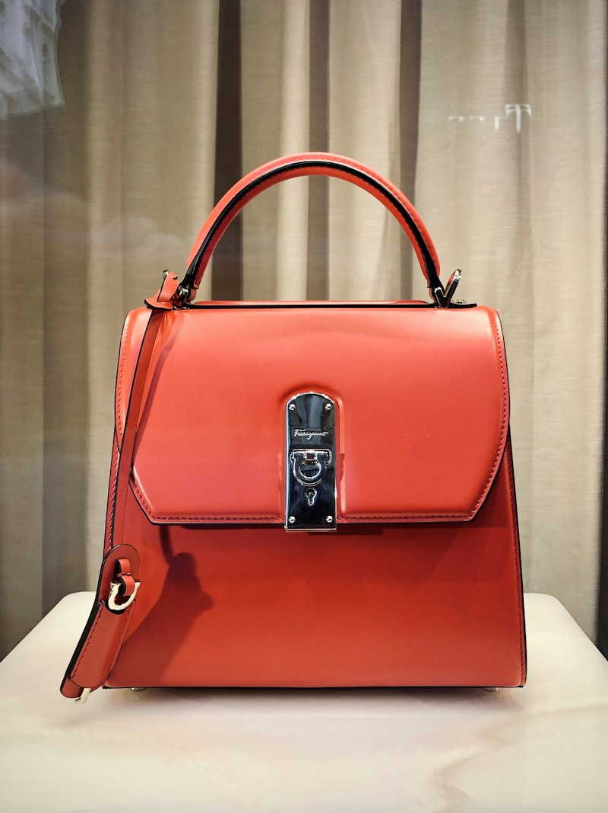

Natural Plant Fiber Ready Stock Rolls
Kapas (Cotton)
Kapas (Cotton) • 100% Combed & Carded Knits
Bahan baku kapas alami berserat panjang (long-staple). Diproses combing mekanis untuk menghilangkan kotoran serat pendek, menghasilkan rajutan yang sangat halus, tidak berbulu (anti-pilling), dan berdaya serap tinggi.
Weight (Gramasi)
140 - 240 GSM
Yarn Count
Ne 20s, 24s, 30s, 40s
Format / Width
42" Tubular / 60" Open
Linear Yield
~3.0 - 3.3 m / Kg
36+ Reactive Color Shades